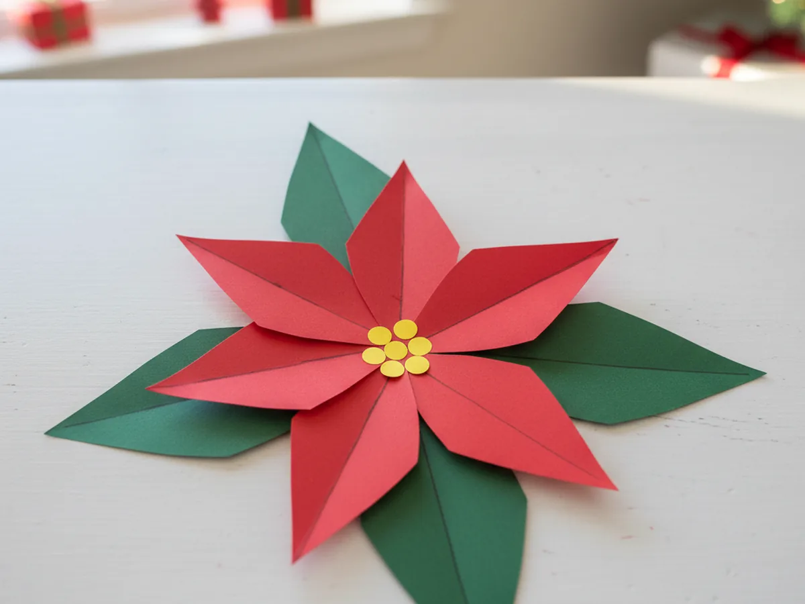
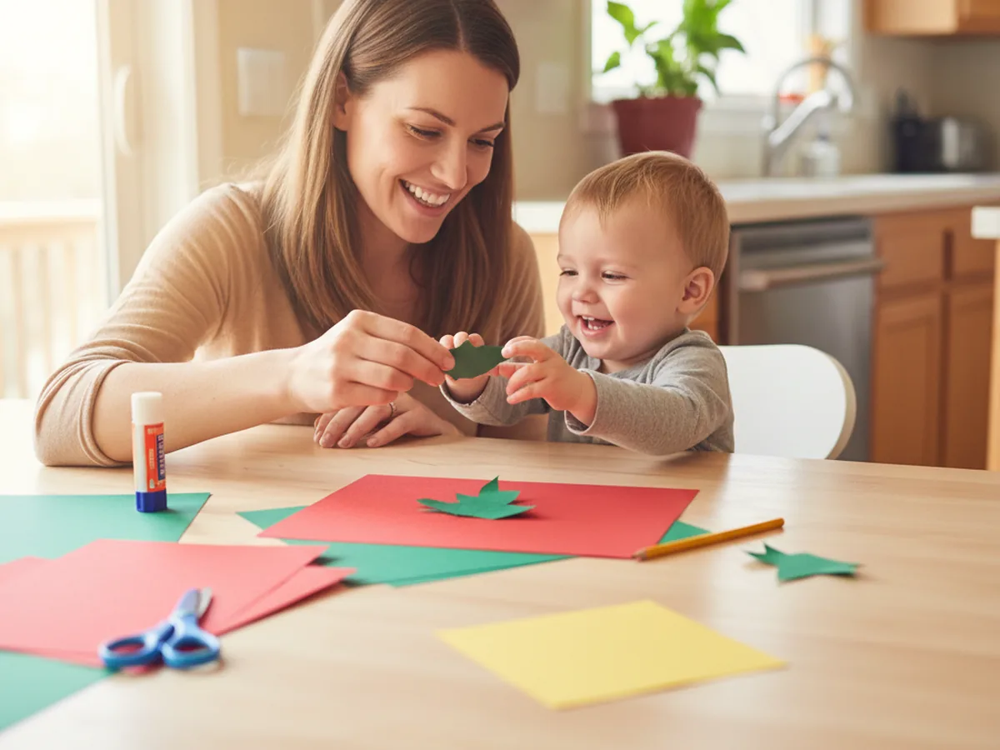
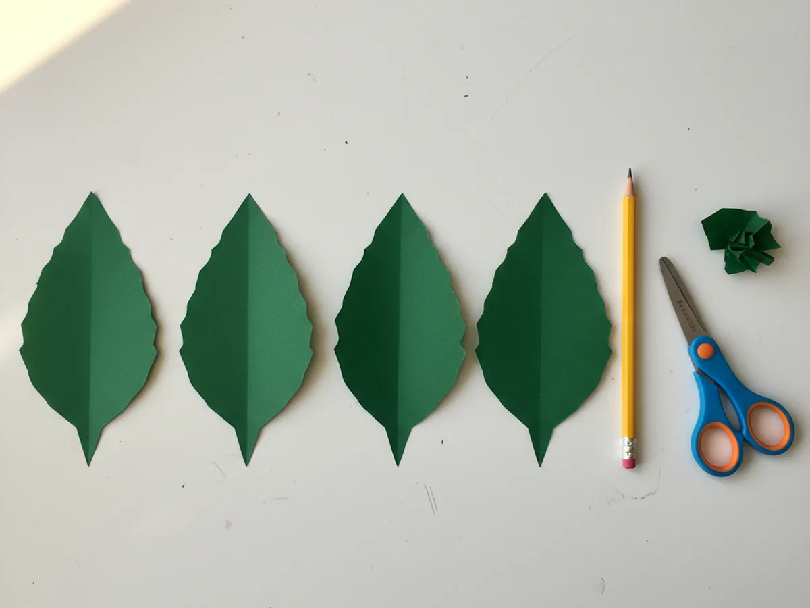
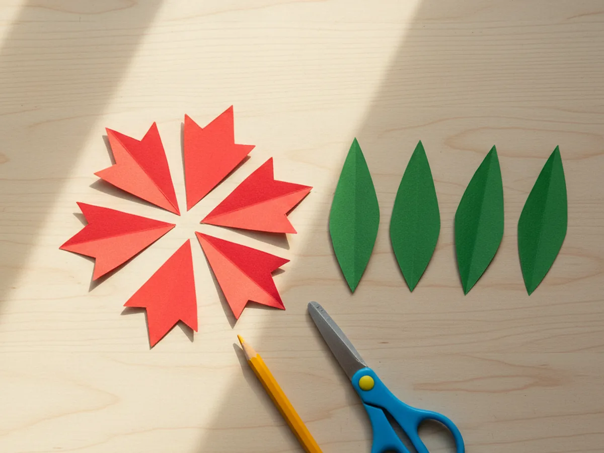
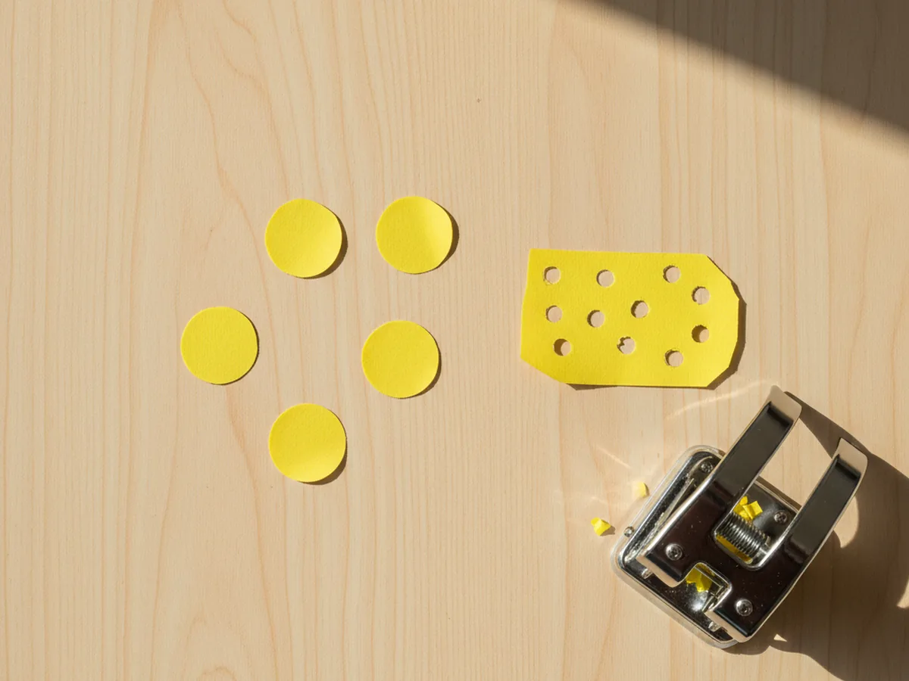
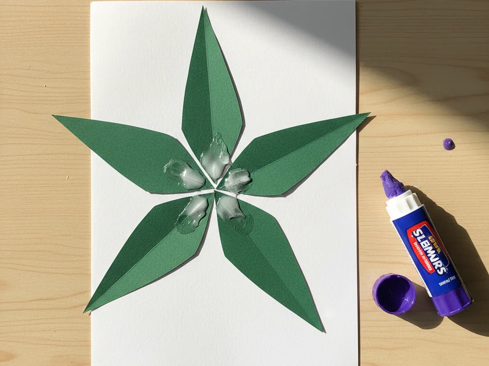
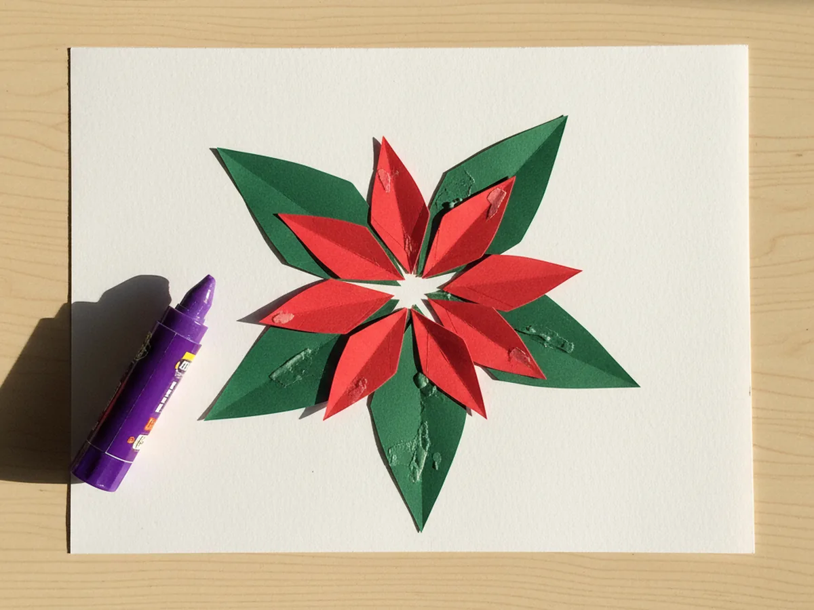
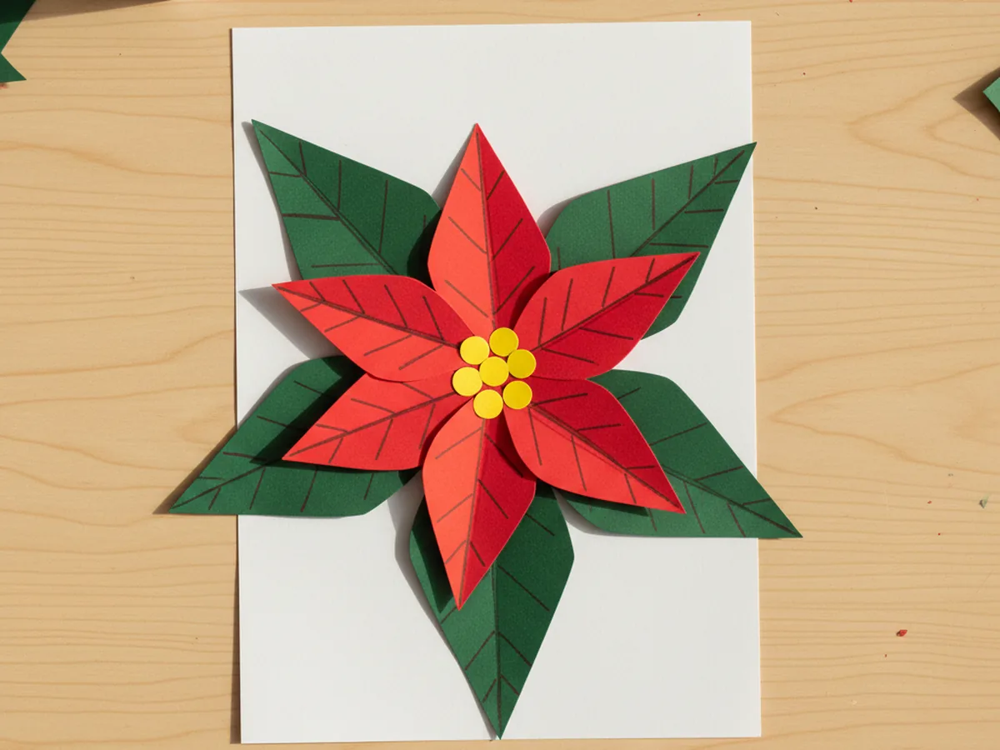

There is something so cozy about pulling out a few sheets of red and green paper at Christmastime and watching a cheerful flower bloom right there on the kitchen table. This paper poinsettia craft takes about twenty-five minutes from start to finish and uses just a handful of supplies you probably already have in the craft drawer. A few snips, a little gluing, and your child has made a beautiful holiday flower that looks lovely taped on the fridge, on a window, or tucked into a Christmas card for grandma. 🌺
The best part is how forgiving this easy paper poinsettia craft really is. Leaves do not need to be perfectly even, petals can curl a little, and the yellow center dots can be wobbly. Every poinsettia ends up looking unique and handmade, which is exactly the charm we are after. If your little one is brand new to scissors, this is a gentle low-stress holiday project you can both enjoy without any pressure to make it look perfect.
Why Kids Love This Craft
Children adore this paper poinsettia craft because the bloom comes together so quickly and looks bright and joyful the whole way through. As soon as the first red petal lands on top of the green leaves, your child can already picture the finished flower, and that quick reward keeps them happily focused. There is no waiting, no drying time, and nothing fragile that could break before it is done.
This poinsettia paper craft is also a sweet way to practice fine motor skills without anyone realizing they are learning. Cutting the leaf shapes builds curved-cutting confidence, layering the petals teaches careful placement, and pressing the tiny yellow dots into the center develops the same finger control kids use for buttons and zippers. Even a three year old can manage most of this simple paper poinsettia craft with a little friendly help from mom.
And then there is the magical moment when the red petals settle on top of the green leaves. Your child will gasp at how much it suddenly looks like a real flower. They will want to make a second one, then a third, and before you know it, you will have a whole little poinsettia garden ready to brighten up the house for the holidays. 💚

What You'll Need
Here is everything you need to make this paper poinsettia craft at home. I like to lay all the supplies out on the table first so my little one can sit down and get straight to the fun part.
- Crayola Construction Paper (240 sheets, 12 colors), the perfect set for cutting bright red petals, deep green leaves, and a sunny yellow center.
- Elmer's Disappearing Purple Glue Sticks (30 pack), washable and easy for tiny fingers to twist up and use.
- Fiskars 5 inch Blunt Tip Kids Scissors, the right safe size for snipping the curved poinsettia leaves and petals.
- Crayola Broad Line Markers (10 classic colors), for drawing tiny veins down the middle of the leaves and petals.
- A pencil for sketching shape outlines and a piece of white cardstock or scrap paper to mount the finished poinsettia.
Step-by-Step Instructions
This paper poinsettia craft walks through six gentle steps that flow easily from cutting to layering to adding the cheerful yellow center. Take your time and let your child do as much as they can comfortably manage.
Step 1: Cut the Green Leaf Shapes
Start by lightly sketching five long pointed leaf shapes on green construction paper, each about the length of your child's hand from wrist to fingertip. The sides should curve gently outward and meet at a soft point at the top, like a teardrop with a sharper tip. Cut all five leaves out with kid scissors. Slightly uneven shapes look beautifully natural, so there is no pressure to make them identical.

Step 2: Cut the Red Petal Shapes
Now move on to the red construction paper and cut six pointed petal shapes with the same gentle curves as the green leaves, but a touch shorter so they will sit nicely on top. Aim for about three quarters of the length of the green leaves. Lay the red petals next to the green leaves so your child can already see the colors coming together for this cheerful poinsettia craft for kids.

Step 3: Make the Yellow Center Dots
From a sheet of yellow construction paper, cut or punch five or six small circles, each about the size of a pea. These will become the cheerful pollen dots in the middle of the flower. If you have a hole punch, this part is wonderfully fast and a tiny bit magical for kids, who love punching holes over and over. If not, your child can snip out little circles with kid scissors instead.

Step 4: Glue the Green Leaves in a Star Pattern
Take a piece of white cardstock and add a small swipe of glue to the bottom of each green leaf. Press the leaves down in a star pattern, with the pointed tips facing outward and the wide bottoms meeting in the middle. Spread them evenly so each leaf has its own little spot to peek out from. This is the lush green base of the paper poinsettia craft.

Step 5: Layer the Red Petals on Top
Now for the most exciting part. Add a swipe of glue to the bottom of each red petal and press them onto the green base, but slightly rotated so the red points peek out between the green points. With six red petals over five green ones, the layers naturally offset, which is what makes a red poinsettia craft look so full and bright. Press each red petal down firmly so the glue sets nicely.

Step 6: Add the Yellow Center and Final Touches
Add a generous dot of glue right in the middle of the red petals, then press the five or six yellow paper dots down in a happy little cluster. If your child wants more detail, use a marker to draw a soft vein down the middle of each red petal and green leaf, just like a real poinsettia. Your paper poinsettia craft is finished and ready to brighten up the fridge, a window, or a homemade Christmas card. ✨

Variations to Try
Tissue Paper Poinsettia: Swap the cardstock petals for crumpled red tissue paper squares. The texture is wonderfully soft and three-dimensional, and the slight wrinkles give the flower a sweet, full bloom look that toddlers especially love.
Poinsettia Christmas Card: Glue the finished poinsettia onto the front of a folded sheet of white or cream cardstock to make a handmade Christmas card. Add a short message inside and tuck it into your child's backpack for a teacher or a grandparent gift.
White or Pink Winter Bloom: Real poinsettias also come in soft white and pink shades. Try this cheerful winter flower in a snowy white or pastel pink version for a calm, elegant decoration that works through the whole winter season.
Final Thoughts
This paper poinsettia craft is one of those gentle holiday projects that gives back so much for so little. The supplies are simple, the steps are sweet, and the result is one of the most recognizable Christmas flowers there is. Whether you make one as a window decoration, a card topper, or a whole little bouquet for the fridge, you and your little one will treasure the warm afternoon you spent making them together. 🎄
More Crafts You'll Love
If your child loved this paper poinsettia craft, they will adore these other cozy holiday paper projects too: